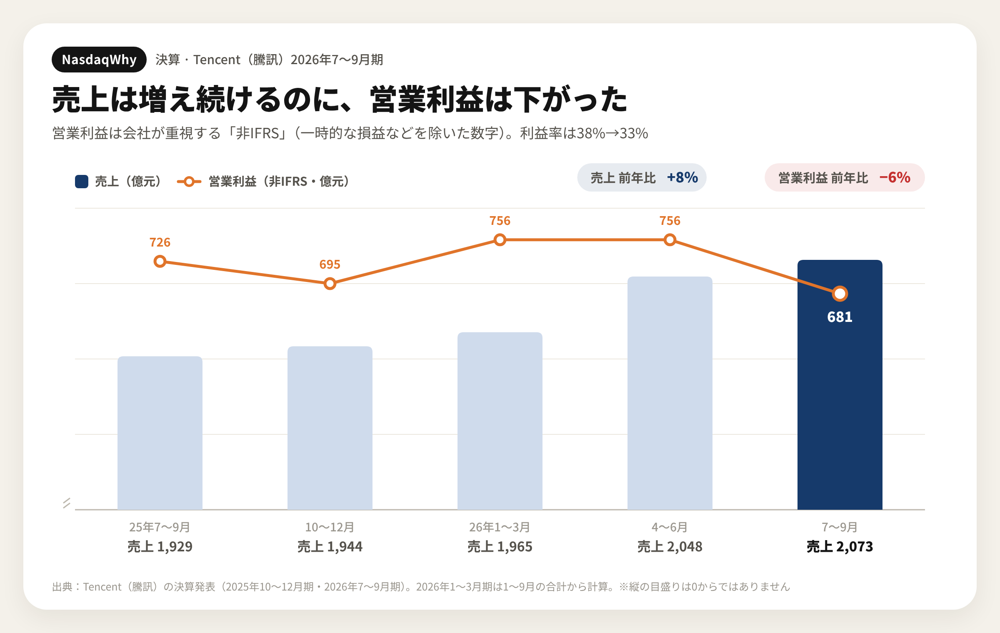
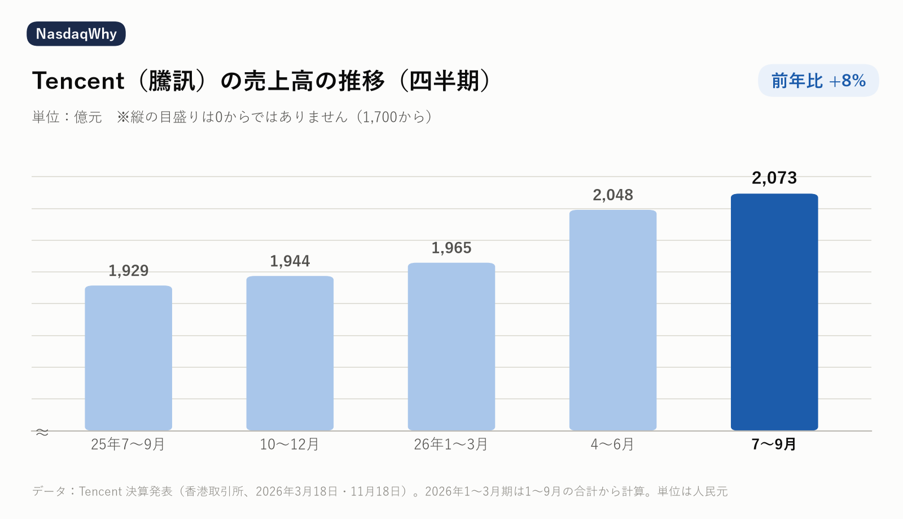
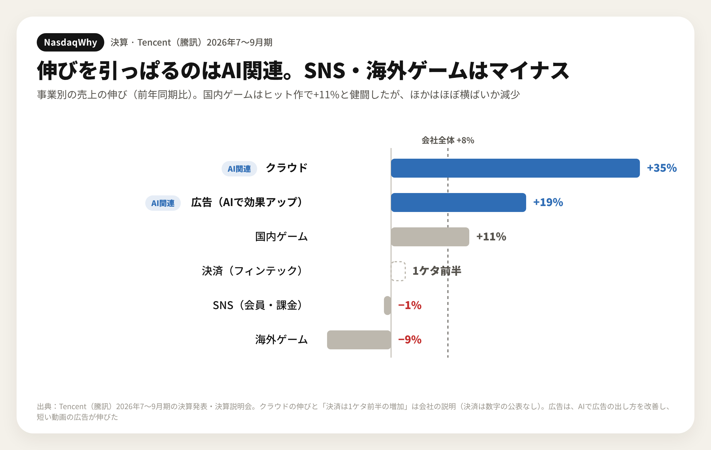
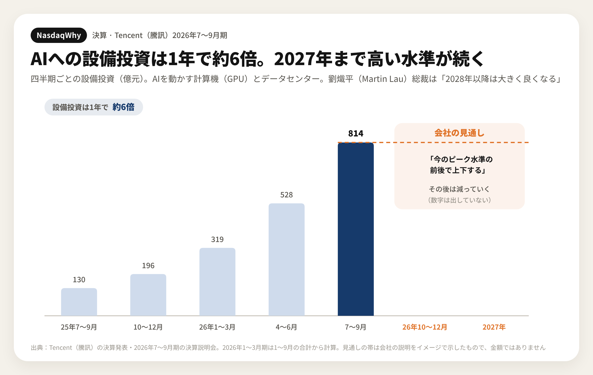
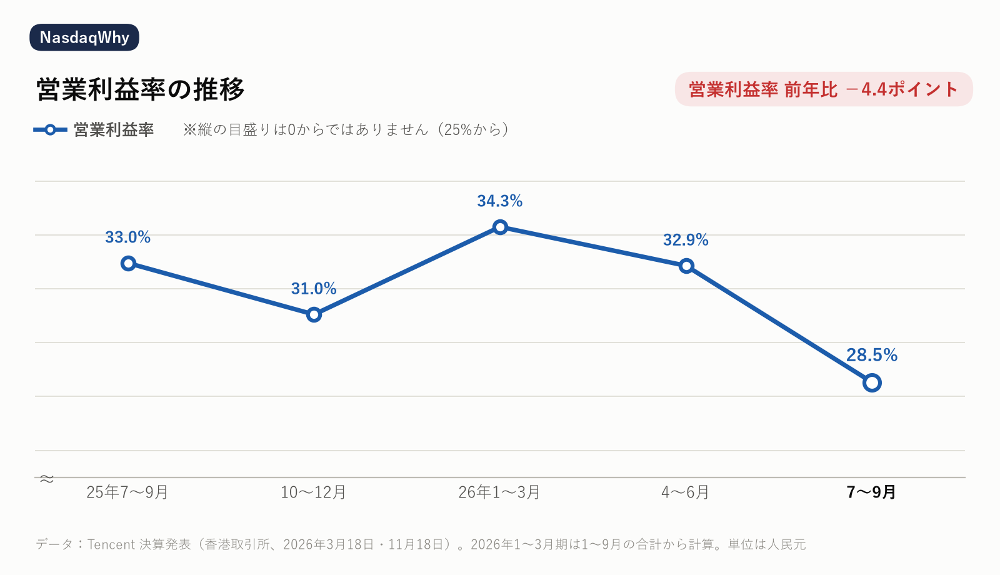
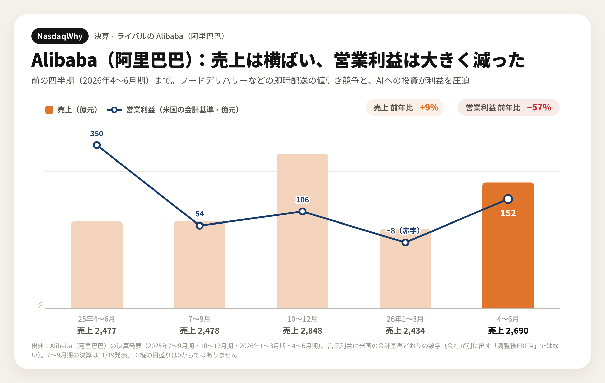
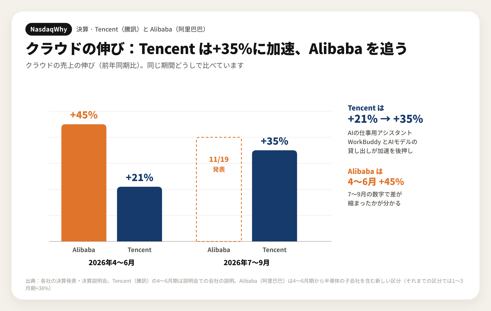

0700｜2026年7〜9月期の決算｜決算発表 2026年11月18日（香港の取引終了後）
Tencent（騰訊）の決算：売上は8%増えたのに、なぜ利益は6%減った？――AIを除いた「実勢」は+8%
中国のSNS・ゲーム大手のTencent（騰訊）の7〜9月期は、売上が前年同期比8%増の2,073億元だった。一方、会社が重視する営業利益（非IFRS）は6%減の681億元。AIの新製品（Hy・Yuanbao（元宝）・WorkBuddy など）を除くと833億元（+8%）で、利益が減ったのはAIへの投資のためと会社は説明している。中国最大のSNS「WeChat（微信）」の月間利用者は14.49億人。AIの仕事用アシスタント「WorkBuddy」は、AIが処理した文字の量（トークン）で中国で最も使われているAI製品だという（会社の説明）。

売上は四半期ごとに増え続けたが、営業利益（非IFRS）は7〜9月期に681億元へ下がった。利益率は38%から33%に下がり、この1年で最も低い。
主な数字（2026年7〜9月期）
| 今回 | 前年同期 | 前年比 | |
|---|---|---|---|
| 売上高 | 2,073億元 | 1,929億元 | +7.5% |
| 営業利益 | 591億元 | 636億元 | -6.9% |
| 営業利益率 | 28.5% | 33.0% | |
| 純利益 | 636億元 | 631億元 | +0.8% |
7〜9月期の事業別の売上
| 事業 | 売上 | 前年同期比 |
|---|---|---|
| ゲーム・SNSなど | 983億元 | +3.0% |
| 国内ゲーム | 476億元 | +11.0% |
| 海外ゲーム | 189億元 | -9.0% |
| SNS | 318億元 | -1.0% |
| 広告 | 430億元 | +19.0% |
| 決済・クラウドなど | 637億元 | +9.0% |

事業別に見ると：伸びているのはAI関連
売上の伸びを事業別に並べると、伸びを引っぱっているのはAI関連の事業だ。クラウドは+35%、広告は+19%（AIで広告の出し方を改善し、短い動画の広告が伸びた）。
一方、SNS（会員・課金）は−1%、海外ゲームは−9%とマイナス。決済（フィンテック）も1ケタ前半の増加にとどまる（会社の説明）。例外は国内ゲームの+11%で、「デルタフォース」などのヒット作による。
【AIを除いた「実勢」の利益】会社は今回から、AIの新製品（Hy・Yuanbao（元宝）・CodeBuddy・WorkBuddy・Xiaowei（小微））の影響を除いた利益も出した。公表の営業利益（非IFRS）は681億元（−6%）だが、AIの新製品を除くと833億元（+8%）、利益率は40%。差の約152億元が、AIの新製品にかかった費用の大きさの目安になる。
※「AIの新製品を除いた利益」は会社が出した参考の数字で、会計の基準で決まったものではない。

会社の見通し
| 数字の見通し | 出していない |
|---|---|
| 設備投資 | 2027年まで今の高さ前後 |
| 利益 | 2028年以降は大きく改善 |
| AIの費用 | 元宝の頃より抑える |
- 会社は、売上や利益の数字の見通しを出していない。
- 決算説明会で、現金で払う設備投資は「いまがピークの水準」で、2026〜2027年はこの水準の前後で上下し、その後は減っていくと説明した。
- 劉熾平（Martin Lau）総裁は、利益について「2028年以降は大きく良くなる」と話した。AIアシスタントXiaowei（小微）の費用は、年の初めのYuanbao（元宝）の宣伝の頃より少なく抑えるという。
設備投資の推移と、会社の見通し
設備投資は、2025年7〜9月の130億元から、2026年7〜9月は814億元へ約6倍に増えた。AIを動かす計算機（GPU）とデータセンターのため。
会社は決算説明会で「現金で払う設備投資はいまがピークの水準。2026〜2027年はこの前後で上下し、その後は減る」と説明した。数字の見通しは出していない。

もうけの力

中国のネット大手（Alibaba・Baidu）と比べると
期間：TencentとBaiduは2026年7〜9月、Alibabaは4〜6月（7〜9月期は11/19発表）。利益率は営業利益率（IFRS・米国基準）。各社の決算発表から。
| 会社 | 売上高 | 前年比 | 利益率 |
|---|---|---|---|
| Tencent | 2,073億元 | +8% | 29% |
| Alibaba | 2,690億元 | +9% | 6% |
| Baidu | 308億元 | −1% | 2% |
利益率は会計の基準どおりの営業利益率。Tencentが会社として出す「非IFRS」の営業利益率は33%。Alibabaは期間が3か月前（4〜6月）で、売上にはネット通販・フードデリバリーなどの即時配送が入るため、事業の中身が大きく違う。Tencentの中心はSNS（WeChat（微信））・ゲーム・広告・決済。どの会社もAIへの投資で利益が圧迫されている。クラウドの伸びは、Tencentが+35%（7〜9月）、Alibabaが+45%（4〜6月、半導体の子会社を含む新しい区分）。
ライバルのAlibaba（阿里巴巴）：前の四半期までの流れ
Alibabaの7〜9月期の決算は11/19に発表される。ここでは、前の四半期（4〜6月期）までの流れを見る。
売上は2,400億〜2,800億元でほぼ横ばい。一方、営業利益（米国の会計基準どおりの数字）は、2025年4〜6月の350億元から、フードデリバリーなどの即時配送の値引き競争とAIへの投資で大きく減り、2026年1〜3月は8億元の赤字になった。4〜6月は152億元に戻ったが、1年前より57%少ない。
※Alibabaは「調整後EBITA」という本業のもうけの数字も出しているが、ここでは比べやすいように会計の基準どおりの営業利益を使った。

クラウドの伸びを比べると
同じ期間どうしで比べると、2026年4〜6月期はAlibabaが+45%、Tencentが+21%。7〜9月期はTencentが+35%に加速し、差を縮めた（Alibabaは4〜6月期から半導体の子会社を含む新しい区分）。
Tencentの加速の中心は、仕事用AIアシスタントのWorkBuddy と、AIモデルの貸し出し（MaaS）・GPUの貸し出し。Alibabaの7〜9月期の数字（11/19）で、差がさらに縮まったかが分かる。

決算説明会で会社が話したこと
【AIへの投資はいつまで続く？】現金で払う設備投資は「いまがピークの水準」。2026〜2027年はこの水準の前後で上下し、その後は減る（会社の説明）。劉熾平（Martin Lau）総裁は「2028年以降は大きく良くなる」と話した。
【利益が減った理由】最高財務責任者のジョン・ロー氏は、研究開発費が+42%の324億元に増えたと説明。宣伝費（+6%）は、WorkBuddy などのAI製品を早く広めるための費用。AIの新製品を除いた営業利益は833億元（+8%）。
【AI製品の勢い】WorkBuddy は1日の利用者が1,000万人を超え、売上は前の四半期の5倍以上。直近7日の売上を1年分に直すと5億ドルを超えるという。WeChat（微信）の中のAIアシスタントXiaowei（小微）は1日の利用者3,000万人。小微の費用は、年の初めのYuanbao（元宝）の宣伝の頃より少なく抑える。
【広告とゲーム】Video Accounts（視頻号）の広告の表示回数は+50%以上。ミニドラマの配信会社の広告収入の約8割は、TencentのAIの仕組みを使っている。国内ゲームは「デルタフォース」「VALORANT MOBILE」「Honour of Kings（王者栄耀）」がけん引。
【AIのチップ】AIを使う段階（推論）は「意外なほど少ない国産チップ」で動かしている。米国の輸出の規制は「どの会社も後退させた」とし、次のAIモデルの学習には時間がかかりそうだと話した。
出典：決算説明会の書き起こし（stockanalysis.com）・BigGo Finance の報道。発言は英語からの要約。
NasdaqWhy の視点：データから読み取れる注目点
決算資料と各社の公式データを並べて読み取れることです。将来を予想するものではありません。
- 【なぜ利益が減ったか】売上は+8%なのに、営業利益（非IFRS）は−6%の681億元。研究開発費が324億元（+42%）と大きく増え、AIの計算機（GPU）を動かす費用や、AI製品を広める宣伝費もかさんだ。会社は、AIの新製品の影響を除いた営業利益は833億元（+8%）、利益率は40%と説明している（公表の利益率は33%で、前年の38%から下がった）。つまり、本業の「実勢」は伸びていて、AIへの先行投資が利益を約152億元押し下げた形だ。
- 【なぜ広告は伸びたのに、もうけの率は下がったか】広告は430億元（+19%）と好調。短い動画の「Video Accounts（視頻号）」で広告の表示回数が50%以上増え、AIで広告の出し方を改善した。ただ、広告の粗利益率は52%と、前年から4ポイント下がった。AIを動かす費用と、短いドラマ（ミニドラマ）の作品の費用が増えたため。
- 【なぜ国内ゲームは伸び、海外ゲームは減ったか】国内ゲームは476億元（+11%）。「デルタフォース」の1日の利用者が50%以上増えて過去最高になり、「VALORANT MOBILE」「Honour of Kings（王者栄耀）」も好調だった。海外ゲームは189億元（−9%、為替の影響を除くと−4%）。前年は子会社Supercellのゲームや「Dying Light: The Beast」の発売で売上が大きく、その反動が出た。
- 【なぜクラウドが加速したか】クラウドは+35%と、4〜6月期の+21%から加速した。AIの仕事用アシスタント「WorkBuddy」は1日の利用者が1,000万人を超え、1日に100兆トークン以上を使う。WorkBuddy の売上は前の四半期の5倍以上、中国の大企業上位100社の6割が利用しているという。AIモデルを貸すサービス（MaaS）の売上は前の四半期の3倍以上、GPUの貸し出しも30%以上増えた。
- 【お金の流れ】設備投資は814億元と、前年同期（130億元）の約6倍。AIの計算機の前払いもあり、フリーキャッシュフローはマイナス691億元になった（前払いを除くと169億元のプラス）。1年前は1,024億元の「借金より多い現金」があったが、9月末には137億元の「現金より多い借金」に変わった。自社株買いは7〜9月に約70億香港ドル。
- 【決算説明会から】会社は、AIの推論（AIを使う段階）は「意外なほど少ない国産チップ」で動かしていると説明した。米国の輸出の規制は「どの会社も後退させた」とし、次のAIモデルの学習には時間がかかりそうだと話した。設備投資は「いまがピーク」で、2027年まではこの水準が続く見込み。劉熾平総裁は「2028年以降は大きく良くなる」と、投資の回収に自信を見せた。
- 【同業と比べると】ライバルのAlibaba（阿里巴巴）は、直近の4〜6月期で売上+9%、営業利益は−57%の152億元。フードデリバリーなどの即時配送の値引き競争とAIへの投資で、1年前の350億元から大きく減った（1〜3月期は8億元の営業赤字）。Tencentは利益の落ち方が−6%と小さく、営業利益率（IFRS）は29%と、Alibaba（6%）やBaidu（百度、2%）を大きく上回る。クラウドの伸びはAlibaba（+45%）が上だが、Tencentも+35%まで追い上げた。
- AIモデル：11月に新しいAIモデル「Hy4」を公開し、公開時点で中国のモデルの中で1位の評価（Agent Arena）を得たと説明。WeChat（微信）の中で動くAIアシスタント「Xiaowei（小微）」は、1日の利用者が3,000万人になった。
次に確認したい決算・予定
- Alibaba（阿里巴巴、11/19）の7〜9月期の決算：クラウドの伸びと、フードデリバリーの赤字。Tencentのクラウド+35%と比べられる。
- NetEase（網易、11/19）の決算：国内ゲームの伸びを、Tencentの+11%と比べる。
- Tencentの次の決算（2027年3月ごろの見込み）：設備投資がピークの水準で止まるか。AIを除いた利益（+8%）と、公表の利益の差が縮まるか。
関連リンク
出典：Tencent 2026年7〜9月期の決算発表（2026年11月18日、香港取引所）・2025年10〜12月期の決算発表（2026年3月18日）・決算説明会（stockanalysis.com の書き起こし、BigGo Finance の報道）。同業はAlibaba 2026年4〜6月期（8月20日、SEC 6-K）・2025年10〜12月期・2026年1〜3月期の決算発表、Baidu 2026年7〜9月期の決算発表
📝 note でも読めます（図つき・まとめ）：note.com/nasdaqwhy